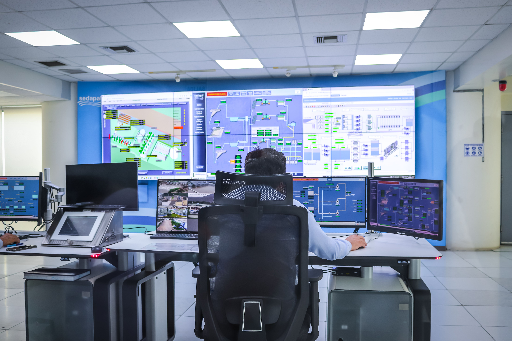

Bienvenidos a la Era Digital
Las tecnologías web han transformado radicalmente la forma en que las personas interactúan, trabajan y acceden a la información a nivel global.

Evolución del Desarrollo Web
A lo largo de los años, las tecnologías de marcas y presentación han evolucionado constantemente:
- Web Estática: Páginas informativas simples en HTML básico.
- Web Dinámica e Interactiva: Incorporación de HTML5, hojas de estilo CSS y lenguajes del lado del cliente y servidor.
- Web Futura: Aplicaciones inteligentes, servicios web interconectados y tecnologías emergentes.
Adopción de Tecnologías por Sector
| Sector | Aplicación Web Principal | Nivel de Impacto |
|---|---|---|
| Educación | Plataformas E-Learning y Contenidos Digitales | Alto |
| Comercio | Tiendas Virtuales y Comercio Electrónico | Muy Alto |
| Empresa | Gestión en la Nube y Automatización | Alto |